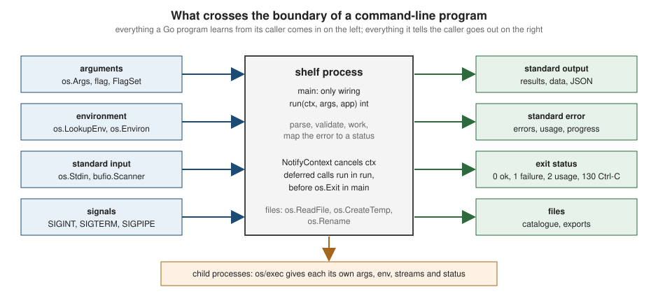

Command-Line Programs
|
This content was generated with the assistance of AI and should be verified against the official documentation before being relied on in production. |
This page is written against Go 1.27 (go1.27.2), checked on 2026-10-18; every go.mod shown has the line go 1.27.
A Go program is a single static executable that the operating system starts with a list of arguments, an environment, three
open streams and a way to deliver signals, and that reports back with an exit status. That is a small contract, and the
standard library covers every part of it: os.Args and flag for the arguments, os for the environment and the streams,
bufio for efficient line input and output, os/signal for interruption, os/exec for starting other programs and
os.Exit for the status. This page covers all of them, shows the traps that each one hides, and finishes by building the
cmd/shelf program of the running shelf scenario: search, lend, return, import and export, with exit codes, a
testable structure and graceful interruption.
It builds on Functions, Closures and Defer (why os.Exit
skips deferred calls), Error Handling (errors.Is/errors.As, which
map errors to statuses here) and Context (cancellation, signal.NotifyContext
and exec.CommandContext from the context side). The related pages are
Packages, Imports and Initialization (the main
package and init), I/O, Files and the Filesystem
(io.Reader, io.Writer, files), fmt, Strings and Text
Processing (Fprintf, Sscanf, text/tabwriter),
Structured Logging with slog,
encoding/json,
The go Command, Builds and Cross-Compilation
(-ldflags -X, -trimpath, go install), Testing and
net/http Clients and Servers (graceful shutdown of a
server). The same ground in other languages is covered in
Rust I/O, Files, Processes and Environment and
C Input, Output and Files.
The standard library is deliberately enough for most tools, and this page stops there. For a command tree with generated help and shell completion (Cobra) and for terminal user interfaces (Bubble Tea) see Go & Rust CLI Frameworks, which is not repeated here; the design of a CLI that people, scripts and AI agents can all use is the subject of the CLI for Agents section, linked where it applies.
Every example was compiled, vetted with go vet and run with Go 1.27.2 on macOS (arm64); the output shown is the real
output, and the compiler message is copied from a real run. The signal, pipe and process examples use Unix facilities
(SIGPIPE, kill, sh, sleep) and therefore run on Linux and macOS as shown; the Windows differences are called out
where they matter. Each example is a package main in its own directory of the example module, built into the module
root with go build ./cmd/<name>, so that the transcripts show ./name as the program name. The go.mod of the module is:
module example.com/shelf
go 1.27The anatomy of a command-line program
Whatever a Go program does, its conversation with the outside world has the same shape, drawn in the figure: the caller provides arguments, an environment, standard input and signals; the program answers with standard output, standard error, files, an exit status and, if it starts other programs, a second conversation of the same shape with each child.

The standard library packages that own each part:
| Package | What it provides | Section |
|---|---|---|
|
|
|
|
Command-line flags, |
|
|
|
|
|
|
|
|
|
|
|
Output formatting, diagnostics to standard error, aligned tables |
|
|
|
One design principle makes every other piece of this page easier: keep main almost empty. main builds the real
dependencies (the three streams, the environment, a signal-aware context), calls a function that returns an int, and
passes that value to os.Exit. Everything else, including parsing, validation, work and the translation of errors into
statuses, lives in run, which tests can call with fake streams and a fake environment. The final sections build the
shelf CLI exactly this way.
Program arguments: os.Args
os.Args is a []string. os.Args[0] is the name the program was started with (a path as typed, a name looked up on
PATH, or the temporary executable that go run builds), and os.Args[1:] are the arguments, exactly as the operating
system delivered them. On Unix the shell has already done the quoting, variable expansion and wildcard expansion, so
'a b' arrives as one argument and *.go arrives as the list of matching files; on Windows the process receives one
command-line string, which the Go runtime splits into os.Args, and no wildcard expansion happens at all. A Go program
never sees the quotes.
package main
import (
"fmt"
"os"
"path/filepath"
)
func main() {
fmt.Println("program:", filepath.Base(os.Args[0]))
fmt.Println("count: ", len(os.Args)-1)
for i, a := range os.Args[1:] {
fmt.Printf("arg %d: %q\n", i+1, a)
}
}$ ./args 'a b' '' 'c"d'
program: args
count: 3
arg 1: "a b"
arg 2: ""
arg 3: "c\"d"
$ go run ./cmd/args one two | head -2
program: args
count: 2Source: os: Args
Three habits make os.Args safe:
-
Check the length before indexing.
os.Args[1]panics withindex out of range [1] with length 1when the user typed nothing. Testlen(os.Args)or, better, letflagdo the parsing and testflag.NArg(). -
Arguments are bytes, not necessarily UTF-8. A file name on Linux can hold any bytes, and
os.Argscarries them unchanged; see Strings, Runes and UTF-8 before assumingrangeyields valid characters. -
Use
os.Executable, notos.Args[0], to find the program’s own file.os.Args[0]can be a bare name that is only meaningful to the shell that resolved it.os.Executablereturns an absolute path to the executable that started the process (it may be the symbolic link that was used, depending on the operating system, so usefilepath.EvalSymlinkswhen a stable location matters, and there is no guarantee that the file still exists). Its documented use is finding resources located next to the executable.
Reading os.Args directly is fine for a program with a fixed shape, such as tool <file>. As soon as options appear,
use the flag package.
The flag package
flag implements the traditional single-dash option syntax used by the Go toolchain itself (go build -o out -v ./...).
It is small, has no dependencies and is complete enough for most tools. What it deliberately lacks are the things that
Cobra and similar libraries add: short and long aliases for one option (-v and --verbose), grouped short options
(-abc), options after positional arguments, and a command tree. The sections below cover what it does have in full.
Flag syntax
| Form | Meaning |
|---|---|
|
Boolean flag: sets it to |
|
Identical to |
|
Any flag, value |
|
Non-boolean flags only: the next argument is the value. |
|
Not a flag: a lone dash is a positional argument, conventionally meaning standard input. |
|
Terminator: everything after it is a positional argument, even if it starts with a dash. |
Parsing stops at the first argument that is not a flag, so flags must come before positional arguments:
shelf -limit 5 go works, shelf go -limit 5 treats -limit and 5 as positional. Boolean flags take their value only
with =: -json false sets json to true and leaves false as a positional argument, because otherwise
cmd -x * would change meaning when a file called false or 0 exists. Integer flags accept decimal, octal (0664),
hexadecimal (0x1234) and negative values; boolean flags accept 1, 0, t, f, T, F, true, false, TRUE,
FALSE, True and False; duration flags accept anything time.ParseDuration does (250ms, 1h30m).
Defining flags
Each type has two constructors: one that returns a pointer (flag.Int returns *int) and one that binds an existing
variable (flag.IntVar(&n, ...)). Both exist as package functions, which act on the default set flag.CommandLine, and
as methods on a FlagSet.
| Pointer form | Variable form | Value syntax |
|---|---|---|
|
|
|
|
|
decimal, |
|
|
non-negative integer |
|
|
|
|
|
any text |
|
|
|
(none) |
|
anything the variable’s |
(none) |
|
calls your function with the text of every occurrence |
(none) |
|
any type implementing |
Every constructor takes (name, default, usage). Constructors panic at start-up, not at parse time, when a definition is
wrong, which is why a mistake surfaces on the very first run:
-
a name that begins with
-or contains=panics (the check was added in Go 1.17); -
defining the same name twice panics with
flag redefined: v, orshelf search flag redefined: vfor a namedFlagSet; -
since Go 1.21, defining a flag after
Setwas already called for that name panics too.
A first example
The search command of the shelf program needs a text to look for, a limit, a switch for JSON output and a timeout.
package main
import (
"flag"
"fmt"
"os"
"time"
)
func main() {
var (
title = flag.String("title", "", "match books whose title contains `text`")
limit = flag.Int("limit", 10, "maximum number of results")
asJSON = flag.Bool("json", false, "print results as JSON")
timeout = flag.Duration("timeout", 5*time.Second, "give up after this long")
)
var verbose bool
flag.BoolVar(&verbose, "v", false, "verbose output")
flag.Parse()
fmt.Printf("title=%q limit=%d json=%t timeout=%v verbose=%t\n", *title, *limit, *asJSON, *timeout, verbose)
fmt.Printf("NFlag=%d NArg=%d Args=%q\n", flag.NFlag(), flag.NArg(), flag.Args())
if flag.NArg() > 0 {
fmt.Fprintln(os.Stdout, "first positional:", flag.Arg(0))
}
}The back-quoted word in a usage string ( ) names the value in the help output. Running it shows the forms from
the syntax table, including the two ways that a boolean flag surprises people:text
$ ./flagbasics -title go -limit 3
title="go" limit=3 json=false timeout=5s verbose=false
NFlag=2 NArg=0 Args=[]
$ ./flagbasics --limit=3 -json -v rest -v
title="" limit=3 json=true timeout=5s verbose=true
NFlag=3 NArg=2 Args=["rest" "-v"]
first positional: rest
$ ./flagbasics -json=false -timeout 250ms -- -title x
title="" limit=10 json=false timeout=250ms verbose=false
NFlag=2 NArg=2 Args=["-title" "x"]
first positional: -title
$ ./flagbasics -json false x
title="" limit=10 json=true timeout=5s verbose=false
NFlag=1 NArg=2 Args=["false" "x"]
first positional: falseReading the transcript: the second run shows rest and the second -v landing in flag.Args() because parsing stopped
at rest; the third shows -- protecting -title and x from parsing; the fourth shows the boolean pitfall,
where false became a positional argument and json is true. flag.NFlag() counts the flags that were set,
flag.NArg() and flag.Args() describe what remains.
Source: flag package documentation
Errors, usage text and -h
When parsing fails, or when the user passes -h or -help and no such flag is defined, the FlagSet prints the problem
and the usage text and then acts according to its error handling value:
| Value | What Parse does after printing the message |
|---|---|
|
Calls |
|
Returns the error ( |
|
Panics with the error. |
Both the error message and the usage go to standard error by default (FlagSet.Output is os.Stderr unless
SetOutput changed it), including for -h: asking for help prints nothing on standard output, which is why
./flagbasics -h 2>/dev/null below prints nothing. (Many tools print help to standard output when the user asked for it;
the standard library does not.)
$ ./flagbasics -limit abc
invalid value "abc" for flag -limit: parse error
Usage of ./flagbasics:
-json
print results as JSON
-limit int
maximum number of results (default 10)
-timeout duration
give up after this long (default 5s)
-title text
match books whose title contains text
-v verbose output
[exit status 2]
$ ./flagbasics -timeout
flag needs an argument: -timeout
Usage of ./flagbasics:
-json
print results as JSON
-limit int
maximum number of results (default 10)
-timeout duration
give up after this long (default 5s)
-title text
match books whose title contains text
-v verbose output
[exit status 2]
$ ./flagbasics -nope 2>&1 | head -3
flag provided but not defined: -nope
Usage of ./flagbasics:
-json
$ ./flagbasics -h; echo status $?
Usage of ./flagbasics:
-json
print results as JSON
-limit int
maximum number of results (default 10)
-timeout duration
give up after this long (default 5s)
-title text
match books whose title contains text
-v verbose output
status 0$ ./flagbasics -h 2>/dev/null | wc -c
0The usage text is generated by PrintDefaults: flags sorted by name, the type or the back-quoted word after the name,
the usage on the next line unless it is a boolean with a one-byte name, and (default ...) omitted when the default is
the zero value. flag.UnquoteUsage exposes the parsing of the back-quoted name for custom formatting.
Source: flag: FlagSet
Source: flag: PrintDefaults
Custom flag types: Value, Func, BoolFunc and TextVar
A flag’s value is anything that implements flag.Value: String() string and Set(string) error. Set is called once,
in command-line order, for each occurrence, so a type can accumulate (a repeatable flag) or validate (return an error that
the parser reports as invalid value "x" for flag -year: ...). If the type also has IsBoolFlag() bool returning
true, -name alone means -name=true. The optional flag.Getter interface adds Get() any; every value type of the
package implements it except the two behind Func and BoolFunc.
Most custom flags do not need a type any more:
-
flag.Func(name, usage, fn)(Go 1.16) callsfnwith the value each time the flag appears; an error fromfnis a parse error. Use it to validate, to parse into a struct or to append to a slice. -
flag.BoolFunc(name, usage, fn)(Go 1.21) is the same for a flag that takes no value, such as-vthat raises the verbosity each time it is repeated.fnreceives the text"true"for-vand the explicit text for-v=false. -
flag.TextVar(&v, name, default, usage)(Go 1.19) binds any variable whose pointer implementsencoding.TextUnmarshaler, with a default that implementsencoding.TextMarshaler:slog.Level,netip.Addr,time.Time,*big.Intand your own types, with no glue code.
package main
import (
"errors"
"flag"
"fmt"
"log/slog"
"os"
"strconv"
"strings"
)
// authors is a repeatable flag: -author A -author B. It implements flag.Value.
type authors []string
func (a *authors) String() string { return strings.Join(*a, ",") }
func (a *authors) Set(s string) error {
if strings.TrimSpace(s) == "" {
return errors.New("author name must not be empty")
}
*a = append(*a, s)
return nil
}
func main() {
fs := flag.NewFlagSet("shelf search", flag.ContinueOnError)
fs.SetOutput(os.Stdout) // usage and parse errors go to stdout so the demo is easy to capture
var by authors
fs.Var(&by, "author", "restrict to `name` (repeatable)")
verbosity := 0
fs.BoolFunc("v", "increase verbosity (repeatable)", func(string) error {
verbosity++
return nil
})
var year int
fs.Func("year", "publication `year` between 1450 and 2100", func(s string) error {
n, err := strconv.Atoi(s)
if err != nil {
return errors.New("not a number")
}
if n < 1450 || n > 2100 {
return fmt.Errorf("%d is out of range", n)
}
year = n
return nil
})
level := slog.LevelInfo
fs.TextVar(&level, "log-level", slog.LevelInfo, "log `level`: debug, info, warn or error")
if err := fs.Parse(os.Args[1:]); err != nil {
if errors.Is(err, flag.ErrHelp) {
return
}
fmt.Println("parse failed:", err)
os.Exit(2)
}
fmt.Printf("authors=%q verbosity=%d year=%d level=%v\n", by, verbosity, year, level)
fmt.Print("set explicitly:")
fs.Visit(func(f *flag.Flag) { fmt.Print(" ", f.Name) })
fmt.Println()
f := fs.Lookup("log-level")
fmt.Printf("log-level: default %q, current %q\n", f.DefValue, f.Value)
}$ ./flagtypes -h
Usage of shelf search:
-author name
restrict to name (repeatable)
-log-level level
log level: debug, info, warn or error (default INFO)
-v increase verbosity (repeatable)
-year year
publication year between 1450 and 2100
$ ./flagtypes -author Knuth -author Pike -v -v -v -year 1978 -log-level=debug
authors=["Knuth" "Pike"] verbosity=3 year=1978 level=DEBUG
set explicitly: author log-level v year
log-level: default "INFO", current "DEBUG"
$ ./flagtypes -year 1200 | head -1
invalid value "1200" for flag -year: 1200 is out of range
$ ./flagtypes -log-level loud | head -1
invalid value "loud" for flag -log-level: slog: level string "loud": unknown nameTwo details in that output are worth noticing. The default for the TextVar flag is shown as INFO, produced by the
MarshalText of slog.Level, and the error for a bad level comes straight from slog. And the program printed the
parse error twice when run without | head -1: the FlagSet already wrote the message and the usage to its output, so
the caller must not print the error again; in the shelf program below, parse failures are turned into a sentinel that
means "already reported".
Source: flag: Func, BoolFunc, TextVar and Value
Custom usage text, required flags and detecting explicit flags
flag.Usage is a variable of type func(): assign a function to control the help text of the command line. A FlagSet
has the same field, FlagSet.Usage. The function runs for -h and for every parse error, and it may print to
flag.CommandLine.Output() so that a later SetOutput is respected.
flag has no notion of a required flag. Check after parsing and fail with the same status the package uses, 2. And since
a flag that was not given has its default value, flag.Visit (which walks only the flags that were set) tells
-days 14 apart from the default of 14; flag.VisitAll walks every defined flag.
package main
import (
"flag"
"fmt"
"os"
"path/filepath"
)
func main() {
name := filepath.Base(os.Args[0])
member := flag.String("member", "", "member `id` (required)")
days := flag.Int("days", 14, "loan length in `days`")
// flag.Usage is a variable: replace it to control the help text. It is
// called for -h/-help and for every parse error.
flag.Usage = func() {
fmt.Fprintf(flag.CommandLine.Output(), "Usage: %s [flags] ISBN...\n\nLend books to a member.\n\nFlags:\n", name)
flag.PrintDefaults()
fmt.Fprintf(flag.CommandLine.Output(), "\nExample:\n %s -member ana 978-0-13-419044-0\n", name)
}
flag.Parse() // the default error handling for the command line is ExitOnError
// Flag.Parse cannot express "required": check it yourself, and exit with
// the same status the flag package uses for a bad command line.
if *member == "" || flag.NArg() == 0 {
flag.Usage()
os.Exit(2)
}
// Visit walks only the flags that were set on the command line, so it can
// tell "-days 14" from the default of 14.
explicit := map[string]bool{}
flag.Visit(func(f *flag.Flag) { explicit[f.Name] = true })
fmt.Printf("lending %q to %s for %d days (days set explicitly: %t)\n", flag.Args(), *member, *days, explicit["days"])
}$ ./usage -h
Usage: usage [flags] ISBN...
Lend books to a member.
Flags:
-days days
loan length in days (default 14)
-member id
member id (required)
Example:
usage -member ana 978-0-13-419044-0
$ ./usage
Usage: usage [flags] ISBN...
Lend books to a member.
Flags:
-days days
loan length in days (default 14)
-member id
member id (required)
Example:
usage -member ana 978-0-13-419044-0
[exit status 2]
$ ./usage -member ana -days 14 978-0-13-419044-0 978-0-13-468599-1
lending ["978-0-13-419044-0" "978-0-13-468599-1"] to ana for 14 days (days set explicitly: true)
$ ./usage -member=ana 978-0-13-419044-0
lending ["978-0-13-419044-0"] to ana for 14 days (days set explicitly: false)Source: flag: Visit
The rest of the API
| Function or method | Purpose |
|---|---|
|
Parse |
|
Whether parsing happened. |
|
The remaining positional arguments, one of them ( |
|
The |
|
Set a defined flag programmatically, as if it had been given. |
|
Walk the flags that were set, or all flags, in lexicographical order. |
|
Print the default help body; split a usage string into the value name and the text. |
|
An independent set: for subcommands, tests and libraries that must not touch |
|
Re-initialise a set, read back its name and handling. |
|
Where messages go; |
|
The default |
|
The error returned by |
A draft of the Go 1.28 release notes, which is not released (Go 1.28 is expected in February 2027), mentions iterator
methods for flag; nothing about them can be relied on yet, and the code on this page targets Go 1.27.
Pitfalls of the flag package
| Pitfall | What to do instead |
|---|---|
Flags after the first positional argument are silently treated as positional |
Document "flags first", reject unexpected leftovers with |
|
Always |
Forgetting that |
|
Defining flags inside a function that runs twice (tests, |
Define on a fresh |
Calling |
Parse in |
Reading a flag variable before |
The variable still holds its default. Read flags only after parsing. |
Printing the parse error again after |
The |
Negative numbers as positional arguments |
|
Environment or config file that should override defaults |
|
The compiler catches the pointer mistake, with a message that names both types:
package main
import (
"flag"
"fmt"
)
func main() {
limit := flag.Int("limit", 10, "maximum number of results")
flag.Parse()
for i := 0; i < limit; i++ {
fmt.Println("result", i)
}
}$ go build .
# example.com/broken
./main.go:11:18: invalid operation: i < limit (mismatched types int and *int)Source: flag: Int
Subcommands with FlagSet
shelf search, shelf lend, shelf export and so on are subcommands: the first non-flag argument selects a command and
the remaining arguments belong to it. The standard library has no command tree, but one flag.FlagSet per subcommand and
a map from names to functions is all it takes. Three details make it robust:
-
Every subcommand gets its own
FlagSetwithContinueOnError, namedshelf <command>so that messages and usage say which command complained, and with its output set to the standard error of the surrounding program (not the globalos.Stderr, so that tests can capture it). -
Because
flagstops at the first positional argument, global flags (-data,-version) go on a top-level set that is parsed first, andArgs()[0]is the subcommand name.shelf -data x.json search goworks andshelf search -data x.json godoes not, which is the same rulegitandgofollow. -
A parse error or a usage mistake is reported once and becomes exit status 2;
-his status 0; anything else a command returns is status 1.
The skeleton below contains only that structure, with two commands; the complete program is built later.
package main
import (
"errors"
"flag"
"fmt"
"io"
"os"
"sort"
)
// errUsage means "the user was already told what is wrong": the flag package
// printed its message and usage, or the command did. run maps it to exit status 2.
var errUsage = errors.New("usage error")
// command is one subcommand: a summary for the help list and a function that
// owns its FlagSet.
type command struct {
summary string
run func(args []string, stdout, stderr io.Writer) error
}
func main() {
os.Exit(run(os.Args[1:], os.Stdout, os.Stderr))
}
func run(args []string, stdout, stderr io.Writer) int {
commands := map[string]command{
"search": {"find books", search},
"lend": {"lend a book to a member", lend},
}
if len(args) == 0 || args[0] == "-h" || args[0] == "-help" || args[0] == "help" {
fmt.Fprintln(stderr, "usage: shelf <command> [flags]")
names := make([]string, 0, len(commands))
for name := range commands {
names = append(names, name)
}
sort.Strings(names)
for _, name := range names {
fmt.Fprintf(stderr, " %-8s %s\n", name, commands[name].summary)
}
if len(args) == 0 {
return 2
}
return 0
}
cmd, ok := commands[args[0]]
if !ok {
fmt.Fprintf(stderr, "shelf: unknown command %q (try \"shelf help\")\n", args[0])
return 2
}
err := cmd.run(args[1:], stdout, stderr)
switch {
case err == nil, errors.Is(err, flag.ErrHelp):
return 0
case errors.Is(err, errUsage):
return 2
default:
fmt.Fprintf(stderr, "shelf %s: %v\n", args[0], err)
return 1
}
}
// parse runs fs.Parse and converts a failure into errUsage, because the
// FlagSet has already printed the problem and the usage text to its output.
func parse(fs *flag.FlagSet, args []string) error {
if err := fs.Parse(args); err != nil {
if errors.Is(err, flag.ErrHelp) {
return err
}
return errUsage
}
return nil
}
func search(args []string, stdout, stderr io.Writer) error {
fs := flag.NewFlagSet("shelf search", flag.ContinueOnError)
fs.SetOutput(stderr)
title := fs.String("title", "", "match books whose title contains `text`")
limit := fs.Int("limit", 10, "maximum number of results")
if err := parse(fs, args); err != nil {
return err
}
fmt.Fprintf(stdout, "search title=%q limit=%d rest=%q\n", *title, *limit, fs.Args())
return nil
}
func lend(args []string, stdout, stderr io.Writer) error {
fs := flag.NewFlagSet("shelf lend", flag.ContinueOnError)
fs.SetOutput(stderr)
member := fs.String("member", "", "member `id` (required)")
if err := parse(fs, args); err != nil {
return err
}
if *member == "" || fs.NArg() != 1 {
fmt.Fprintln(stderr, "usage: shelf lend -member ID ISBN")
return errUsage
}
fmt.Fprintf(stdout, "lent %s to %s\n", fs.Arg(0), *member)
return nil
}$ ./subcmds help
usage: shelf <command> [flags]
lend lend a book to a member
search find books
$ ./subcmds search -title go -limit 2 extra
search title="go" limit=2 rest=["extra"]
$ ./subcmds lend
usage: shelf lend -member ID ISBN
[exit status 2]
$ ./subcmds search -limit zz
invalid value "zz" for flag -limit: parse error
Usage of shelf search:
-limit int
maximum number of results (default 10)
-title text
match books whose title contains text
[exit status 2]
$ ./subcmds frob
shelf: unknown command "frob" (try "shelf help")
[exit status 2]Source: flag: NewFlagSet
Exit codes, os.Exit and deferred calls
A process ends with an integer status that the caller reads: shells expose it as $?, make and CI systems treat non-zero
as failure, exec.Cmd returns it in an *exec.ExitError. The conventions are old and widely relied on:
| Status | Meaning |
|---|---|
|
Success. |
|
General failure. What |
|
Misuse of the command line. The |
|
Free for the program’s own meanings. The |
|
Reserved by shells: found but not executable, command not found. |
|
Terminated by signal |
os.Exit(code) ends the process immediately: deferred functions do not run, goroutines are not stopped, buffered
writers are not flushed, and log.Fatal is just Print followed by os.Exit(1). Conversely, when main returns the
program exits with status 0 even if other goroutines are still running. Two consequences follow:
-
never
defersomething important in a function that ends withos.Exitorlog.Fatal; and -
call
os.Exitin exactly one place,main, after a function that owns all the deferred cleanup has returned.
On Unix the kernel keeps only the low eight bits of the status, so values outside 0 to 255 wrap around; the documentation advises staying in the range 0 to 125 for portability. A small program shows the wrap-around, and the flag-redefinition panic message from earlier:
package main
import (
"flag"
"fmt"
"os"
"strconv"
)
func main() {
if len(os.Args) > 1 && os.Args[1] == "redefine" {
flag.Bool("v", false, "verbose")
defer func() { fmt.Println("recovered:", recover()) }()
flag.Bool("v", false, "verbose again") // panics: flag redefined
return
}
code, _ := strconv.Atoi(os.Args[1])
os.Exit(code)
}$ ./exitrange redefine
./exitrange flag redefined: v
recovered: ./exitrange flag redefined: v
$ for c in 0 1 125 255 256 300 -1; do ./exitrange $c; echo "os.Exit($c) -> status $?"; done
os.Exit(0) -> status 0
os.Exit(1) -> status 1
os.Exit(125) -> status 125
os.Exit(255) -> status 255
os.Exit(256) -> status 0
os.Exit(300) -> status 44
os.Exit(-1) -> status 255Source: os: Exit
The next program contrasts the four ways a Go program can end badly, selected by its first argument: os.Exit, log.Fatal,
a panic and the run pattern. Its exitError type lets a command choose its status, and errors.As finds it even
when the error was wrapped with %w on the way up.
package main
import (
"errors"
"fmt"
"log"
"os"
)
// exitError carries the exit status a failed command wants the process to use.
type exitError struct {
code int
err error
}
func (e *exitError) Error() string { return e.err.Error() }
func (e *exitError) Unwrap() error { return e.err }
func main() {
switch os.Args[1] {
case "exit":
defer fmt.Println("deferred: never printed")
fmt.Println("calling os.Exit(3)")
os.Exit(3)
case "fatal":
defer fmt.Println("deferred: never printed")
log.SetFlags(0)
log.Fatal("shelf: cannot open the catalogue")
case "panic":
defer fmt.Println("deferred: printed while the panic unwinds")
var books map[string]int
books["go"]++
case "run":
os.Exit(realMain())
}
}
// realMain owns all the deferred cleanup; main only turns its result into a
// status, after realMain has returned and its defers have run.
func realMain() int {
defer fmt.Println("deferred: flushed and closed everything")
err := work()
var ee *exitError
switch {
case err == nil:
return 0
case errors.As(err, &ee):
fmt.Fprintln(os.Stderr, "shelf:", ee)
return ee.code
default:
fmt.Fprintln(os.Stderr, "shelf:", err)
return 1
}
}
func work() error {
return fmt.Errorf("lend: %w", &exitError{code: 4, err: errors.New("book is already on loan")})
}$ ./exitcodes exit
calling os.Exit(3)
[exit status 3]
$ ./exitcodes fatal
shelf: cannot open the catalogue
[exit status 1]
$ ./exitcodes panic 2>&1 | head -4
deferred: printed while the panic unwinds
panic: assignment to entry in nil map
goroutine 1 [running]:
$ ./exitcodes run
shelf: book is already on loan
deferred: flushed and closed everything
[exit status 4]$ ./exitcodes panic > /dev/null 2>&1; echo status $?
status 2What the four runs show: os.Exit and log.Fatal skipped the deferred print, the panic ran it while unwinding and then
printed a stack trace and exited with 2, and the run pattern printed the message, ran its defers (the line saying everything was
flushed and closed) and then exited with the status the error asked for. The pattern costs two lines in main and removes
a whole class of "the file was never closed" and "the buffer was never flushed" bugs.
Source: log: Fatal
Choose statuses deliberately and document them in the help text: scripts, CI pipelines and AI agents branch on them. The
reasoning, and a longer list of conventions, are in Streams & Exit
Codes. A related testing point: since Go 1.15 the value returned by TestMain is passed to os.Exit by the test
wrapper, so a TestMain no longer needs to call os.Exit(m.Run()) itself (see
Testing).
Standard streams
os.Stdin, os.Stdout and os.Stderr are ordinary *os.File values for file descriptors 0, 1 and 2, so they are
an io.Reader, two io.Writer`s and a `Stat-able file. The Unix convention, which Go tools follow, is:
-
standard output carries the program’s result (the data a pipe or a redirect should receive);
-
standard error carries everything else: error messages, usage text, progress, warnings and logs.
Keeping the two apart is what lets shelf search zzz > out.txt leave a clean file and show the diagnostics on the
terminal, and shelf export | jq keep working when a warning is printed. fmt.Fprintln(os.Stderr, ...) is the
direct way; the log package writes to standard error by default (log.SetFlags(0) removes the timestamp for CLIs),
and slog handlers should be pointed at os.Stderr for the same reason. The os.Stderr variable can be replaced in tests
only if the code reads it through a field, which is why the shelf program keeps its streams in an app struct.
Reading input
| Tool | Use it for |
|---|---|
|
Line- or word-oriented input; the default for text. |
|
|
|
The whole input as one |
|
A stream of JSON values, decoded as they arrive; see encoding/json. |
|
Pipe the input through unchanged without holding it in memory. |
The first example reads standard input as a scanner, reports what kind of file it is and demonstrates the line limit.
package main
import (
"bufio"
"errors"
"fmt"
"os"
)
func main() {
// Is standard input a terminal, a pipe or a file?
if fi, err := os.Stdin.Stat(); err == nil {
switch {
case fi.Mode()&os.ModeCharDevice != 0:
fmt.Println("stdin: a character device (a terminal, or /dev/null)")
case fi.Mode()&os.ModeNamedPipe != 0:
fmt.Println("stdin: a pipe")
case fi.Mode().IsRegular():
fmt.Println("stdin: a redirected file")
}
}
sc := bufio.NewScanner(os.Stdin)
if len(os.Args) > 1 && os.Args[1] == "big" {
// The default limit is 64 KiB per line (bufio.MaxScanTokenSize).
sc.Buffer(make([]byte, 0, 64*1024), 1024*1024)
}
n, longest := 0, 0
for sc.Scan() {
n++
longest = max(longest, len(sc.Text()))
}
if err := sc.Err(); err != nil {
fmt.Fprintln(os.Stderr, "read error:", err)
fmt.Printf("too long: %t, lines read before the error: %d\n", errors.Is(err, bufio.ErrTooLong), n)
os.Exit(1)
}
fmt.Printf("lines=%d longest=%d\n", n, longest)
}$ printf 'go\nrust\nc\n' | ./stdin
stdin: a pipe
lines=3 longest=4
$ ./stdin < cmd/stdin/main.go
stdin: a redirected file
lines=40 longest=100
$ python3 -c 'print("x"*70000)' | ./stdin
stdin: a pipe
read error: bufio.Scanner: token too long
too long: true, lines read before the error: 0
[exit status 1]
$ python3 -c 'print("x"*70000)' | ./stdin big
stdin: a pipe
lines=1 longest=70000
$ ./stdin < /dev/null
stdin: a character device (a terminal, or /dev/null)
lines=0 longest=0Source: bufio: Scanner
Two things in the transcript are worth remembering. A scanner that hits a too-long line reports it through Err(), not by
crashing, but the lines after it are lost: the fix is Buffer, or a bufio.Reader. And /dev/null is a character
device, just like a terminal, so ModeCharDevice is a heuristic for "interactive" and not proof of it. For a true
terminal test (and for terminal size and raw mode) the Go project’s golang.org/x/term module provides term.IsTerminal;
this page uses only the standard library. How a program should change its behaviour when its streams are not terminals
(colour, progress bars, prompts) is covered in TTY, Colour &
Interactivity.
An interactive prompt belongs on standard error, so that standard output stays machine-readable, and must treat end of input as an answer too. The prompt below defaults to "no":
package main
import (
"bufio"
"errors"
"fmt"
"io"
"os"
"strings"
)
// confirm asks a yes/no question on stderr (stdout stays clean for data) and
// reads the answer from in. End of input counts as "no".
func confirm(in *bufio.Reader, prompt string) (bool, error) {
fmt.Fprintf(os.Stderr, "%s [y/N] ", prompt)
line, err := in.ReadString('\n')
if err != nil && !errors.Is(err, io.EOF) {
return false, err
}
answer := strings.ToLower(strings.TrimSpace(line))
return answer == "y" || answer == "yes", nil
}
func main() {
ok, err := confirm(bufio.NewReader(os.Stdin), "Return all 3 books on loan to ana?")
if err != nil {
fmt.Fprintln(os.Stderr, "shelf:", err)
os.Exit(1)
}
if !ok {
fmt.Fprintln(os.Stderr, "aborted")
os.Exit(1)
}
fmt.Println("returned 3 books")
}$ echo y | ./confirm
Return all 3 books on loan to ana? [y/N] returned 3 books
[exit status 0]
$ echo no | ./confirm
Return all 3 books on loan to ana? [y/N] aborted
[exit status 1]
$ printf '' | ./confirm
Return all 3 books on loan to ana? [y/N] aborted
[exit status 1]Source: bufio: Reader.ReadString
The convention for programs that accept a file or standard input is: no file argument, or the argument -, means standard
input. The import command of shelf does this, and io.Reader makes it one switch because both *os.File and
os.Stdin satisfy it.
Writing output
os.Stdout is not buffered: every fmt.Println is a system call. A program that prints a lot should wrap it in a
bufio.Writer, write through it, and check the error of Flush: it is where a full disk or a closed pipe is reported.
That is also where Go’s treatment of SIGPIPE matters. When the reader of a pipe goes away (prog | head -2), the kernel
sends SIGPIPE on the next write. By the os/signal documentation, a Go program that has not called Notify for
SIGPIPE and writes to a broken pipe on file descriptor 1 or 2 is terminated by SIGPIPE, like a C program; a write to
a broken pipe on any other descriptor just fails with EPIPE; and once the program has called Notify for SIGPIPE, every
descriptor behaves the second way. So command-line programs behave like typical Unix tools by default, and servers do not
crash when a client hangs up.
package main
import (
"bufio"
"fmt"
"os"
"os/signal"
"syscall"
)
func main() {
if len(os.Args) > 1 && os.Args[1] == "handle-sigpipe" {
// Once SIGPIPE is registered with Notify, a write to a closed pipe on
// stdout or stderr returns EPIPE instead of killing the process.
signal.Notify(make(chan os.Signal, 1), syscall.SIGPIPE)
}
os.Exit(run())
}
func run() int {
out := bufio.NewWriter(os.Stdout)
for i := 1; i <= 200000; i++ {
if _, err := fmt.Fprintf(out, "978-0-13-%06d-0 title %d\n", i, i); err != nil {
fmt.Fprintln(os.Stderr, "shelf: write:", err)
return 1
}
}
// Flush is where buffered write errors surface: always check it.
if err := out.Flush(); err != nil {
fmt.Fprintln(os.Stderr, "shelf: flush:", err)
return 1
}
return 0
}$ ./pipes | head -2
978-0-13-000001-0 title 1
978-0-13-000002-0 title 2
$ ./pipes handle-sigpipe | head -2
978-0-13-000001-0 title 1
978-0-13-000002-0 title 2
shelf: write: write /dev/stdout: broken pipeIn the first run head exited after two lines and the shell reported the status 141 (128 plus SIGPIPE 13) of the killed
pipes process, which is exactly what yes | head -1 does. In the second run the Notify call turned the signal into an
ordinary write error that the program reports and returns as status 1. For a filter that should end quietly when its output
closes, either behaviour can be right; the important part is to decide, and to check the Flush error.
Source: os/signal: SIGPIPE
text/tabwriter aligns columns for human-readable listings, as the search command of shelf does, and
encoding/json with SetIndent produces the machine-readable form behind a -json flag; offering both, and sending only
the data to standard output, is the heart of Machine-Readable Output.
NO_COLOR, TERM=dumb and the --no-color flag are conventions for turning colour off; the standard library has no colour
support and a program that adds it should check them and whether the stream is a terminal.
Environment variables
The environment is a list of KEY=value strings that every process inherits from its parent and passes to its children.
It is the usual way to configure a program without flags (SHELF_DATA, HTTP_PROXY, NO_COLOR), and the standard way
for a deployment platform to hand over settings.
| Function | Behaviour |
|---|---|
|
The value, or |
|
|
|
Change this process’s environment (and what children started later inherit). Nothing outside the process changes. |
|
A copy of the environment as |
|
Replace |
|
Per-user directories. The configuration directory is |
|
|
|
Host name, working directory, path of the running program. |
On Windows, environment variable names are case-insensitive; elsewhere they are case-sensitive. The example program
below resolves one setting with the usual precedence, flag, then environment, then built-in default, and exercises the
functions. (It was run with HOME set explicitly, and the last two lines show the macOS answers; on Linux they are
/home/ana/.config and /home/ana/.cache.)
package main
import (
"fmt"
"os"
"slices"
"strings"
"time"
)
// setting resolves one option: an explicit flag wins, then the environment,
// then the built-in default.
func setting(flagValue, envName, def string) (value, source string) {
if flagValue != "" {
return flagValue, "flag"
}
if v, ok := os.LookupEnv(envName); ok && v != "" {
return v, "environment"
}
return def, "default"
}
func main() {
// Getenv cannot tell "unset" from "set to the empty string"; LookupEnv can.
fmt.Printf("Getenv(SHELF_EMPTY)=%q\n", os.Getenv("SHELF_EMPTY"))
_, set := os.LookupEnv("SHELF_EMPTY")
_, missing := os.LookupEnv("SHELF_MISSING")
fmt.Println("SHELF_EMPTY set:", set, "SHELF_MISSING set:", missing)
dir, src := setting("", "SHELF_DATA", "./shelf-data")
fmt.Printf("data dir: %s (from %s)\n", dir, src)
dir, src = setting("/tmp/from-flag", "SHELF_DATA", "./shelf-data")
fmt.Printf("data dir: %s (from %s)\n", dir, src)
d, err := time.ParseDuration(os.Getenv("SHELF_TIMEOUT"))
fmt.Println("SHELF_TIMEOUT:", d, err)
// Setenv changes only this process (and the children it starts later).
os.Setenv("SHELF_COLOR", "never")
fmt.Println("after Setenv:", os.Getenv("SHELF_COLOR"))
os.Unsetenv("SHELF_COLOR")
_, still := os.LookupEnv("SHELF_COLOR")
fmt.Println("after Unsetenv, set:", still)
// Environ returns a copy of "key=value" strings.
var mine []string
for _, kv := range os.Environ() {
if strings.HasPrefix(kv, "SHELF_") {
mine = append(mine, kv)
}
}
slices.Sort(mine) // the order of Environ is not specified
fmt.Println("SHELF_* variables:", mine)
// Expand and ExpandEnv substitute $var and ${var}; unset variables become "".
fmt.Println(os.ExpandEnv("data in ${SHELF_DATA}/books.json, user=$SHELF_MISSING."))
fmt.Println(os.Expand("$title by $author", func(k string) string {
return map[string]string{"title": "TGPL", "author": "Donovan"}[k]
}))
home, _ := os.UserHomeDir()
cfg, _ := os.UserConfigDir()
cache, _ := os.UserCacheDir()
fmt.Println("home:", home)
fmt.Println("config:", cfg)
fmt.Println("cache:", cache)
}$ SHELF_EMPTY= SHELF_DATA=/srv/shelf SHELF_TIMEOUT=90s HOME=/home/ana ./envvars
Getenv(SHELF_EMPTY)=""
SHELF_EMPTY set: true SHELF_MISSING set: false
data dir: /srv/shelf (from environment)
data dir: /tmp/from-flag (from flag)
SHELF_TIMEOUT: 1m30s <nil>
after Setenv: never
after Unsetenv, set: false
SHELF_* variables: [SHELF_DATA=/srv/shelf SHELF_EMPTY= SHELF_TIMEOUT=90s]
data in /srv/shelf/books.json, user=.
TGPL by Donovan
home: /home/ana
config: /home/ana/Library/Application Support
cache: /home/ana/Library/CachesSource: os: LookupEnv
Guidance for configuration through the environment:
-
Prefix your own variables (
SHELF_) so they do not collide with others, and document each one in the help text. -
Treat the environment as input to be validated, exactly like flags: the example parses
SHELF_TIMEOUTwithtime.ParseDurationand a missing or malformed value is an error to handle, not a zero. -
Do not put secrets in flags (they appear in process listings) and be careful with the environment (children inherit it, and on many systems it is readable by the same user’s other processes). Prefer a file with restrictive permissions, a credential helper, or standard input. The reasoning is in Configuration & Auth and Security; nothing on this page uses real credentials.
-
In tests, use
t.Setenv, which restores the old value and forbids parallel tests, or inject agetenvfunction as theshelfprogram does, which is better still because it needs no global state. -
Libraries should not read the environment on their own: take configuration as parameters and let
mainread the environment.
Signals and graceful shutdown
A signal is the operating system’s way to interrupt a process: the user pressed Ctrl-C, the terminal closed, an orchestrator
wants a container to stop, a pipe broke. What a Go program does by default depends on the signal; os/signal changes it.
| Signal | Typical source | Default behaviour of a Go program |
|---|---|---|
|
Ctrl-C |
The program exits. |
|
|
The program exits. |
|
The controlling terminal closed |
The program exits. |
|
Ctrl-\ (control-backslash) |
The program exits with a goroutine stack dump. Useful to see where a hung program is stuck. |
|
|
Cannot be caught, blocked or ignored: |
|
Write to a closed pipe |
Standard output and standard error: the program is terminated. Other descriptors: the write fails with |
|
Application-defined, terminal resized, child exited |
Caught by the runtime and ignored, until |
|
Ctrl-Z and terminal job control |
The system default, which the shell uses for job control. |
|
Faults caused by the program itself |
Converted into a run-time panic. |
On Windows the only signal that exists is os.Interrupt, delivered for Ctrl-C and Ctrl-Break; closing the console window,
logging off or shutting down is reported to Notify as syscall.SIGTERM while the process is given a short time to clean
up. os.Process.Signal(os.Interrupt) is not implemented on Windows, so code that stops a child that way needs another
mechanism there.
signal.Notify
signal.Notify(c, sigs...) relays the listed signals to the channel c, replacing the default behaviour. With no signals
listed it relays all of them, which is rarely what you want. The channel must be buffered: Notify never blocks when it
sends, so a signal that arrives while nobody is receiving on an unbuffered channel is dropped. A buffer of one is enough for
a single "please stop" notification, and go vet has an analyzer (sigchanyzer) for the mistake:
package main
import (
"fmt"
"os"
"os/signal"
)
func main() {
sigs := make(chan os.Signal)
signal.Notify(sigs, os.Interrupt)
fmt.Println("waiting for Ctrl-C")
<-sigs
}$ go vet .
main.go:11:2: misuse of unbuffered os.Signal channel as argument to signal.NotifySource: os/signal: Notify
signal.Stop(c) unregisters a channel and guarantees that it receives nothing more; signal.Reset(sigs...) removes every
handler for the signals and restores the default; signal.Ignore(sigs...) makes the signals do nothing; and
signal.Ignored(sig) reports whether one is currently ignored.
signal.NotifyContext
For the common case (stop on the first Ctrl-C or SIGTERM), signal.NotifyContext(parent, sigs...) (Go 1.16) returns a
context that is cancelled when one of the signals arrives, and a stop function. Since Go 1.26 the context is cancelled with a
cause that names the signal, so context.Cause(ctx) returns the text interrupt signal received or the
text terminated signal received, while ctx.Err() is still context.Canceled. Call stop as soon as signals no longer need to be diverted:
it releases the resources and, like signal.Reset, may restore the default behaviour, which is what lets a second Ctrl-C
kill a program that is stuck while shutting down.
The program below sends the signals to itself so that its output is deterministic. It shows Notify, NotifyContext
with its cause, and what stop does: the final SIGINT terminates the process with the default action, status 130
as seen by the shell, and "not reached" is never printed.
package main
import (
"context"
"fmt"
"os"
"os/signal"
"syscall"
"time"
)
func main() {
self, err := os.FindProcess(os.Getpid())
if err != nil {
panic(err)
}
// 1. Notify: a buffered channel receives the signals. The buffer must hold
// at least one value because the package never blocks when it sends.
sigs := make(chan os.Signal, 1)
signal.Notify(sigs, syscall.SIGINT, syscall.SIGTERM)
self.Signal(syscall.SIGTERM)
select {
case s := <-sigs:
fmt.Println("Notify received:", s)
case <-time.After(5 * time.Second):
fmt.Println("no signal")
}
signal.Stop(sigs) // unregister; SIGTERM would now terminate the process again
// 2. NotifyContext: the context is cancelled by the first signal, and
// context.Cause says which one.
ctx, stop := signal.NotifyContext(context.Background(), os.Interrupt, syscall.SIGTERM)
defer stop()
self.Signal(os.Interrupt)
select {
case <-ctx.Done():
fmt.Println("NotifyContext: Err =", ctx.Err())
fmt.Println("NotifyContext: Cause =", context.Cause(ctx))
case <-time.After(5 * time.Second):
fmt.Println("no signal")
}
// 3. After stop, signals behave as before Notify. A second Ctrl-C now kills
// the process with the default action instead of being swallowed.
stop()
fmt.Println("stopped; sending SIGINT with the default action restored")
self.Signal(os.Interrupt)
time.Sleep(5 * time.Second)
fmt.Println("not reached")
}$ ./signals
Notify received: terminated
NotifyContext: Err = context canceled
NotifyContext: Cause = interrupt signal received
stopped; sending SIGINT with the default action restored
[exit status 130]Source: os/signal: NotifyContext
The first line prints terminated, the string form of syscall.SIGTERM (the type is syscall.Signal, and os.Signal
is the interface that os.Interrupt and os.Kill also satisfy; they are the only two signal values guaranteed to exist
on every platform).
Graceful shutdown of a CLI
Interruption should leave the program’s data consistent. The pattern used by long-running commands is:
-
create the signal-aware context in
mainand pass it down; -
check
ctx.Err()between units of work (between records, between pages), never in the middle of one; -
when the context is cancelled, finish or roll back the current unit, flush and close everything, and return instead of exiting from deep inside;
-
return a distinctive status (conventionally
128 + signal, so 130 for Ctrl-C); -
call
stopright after the first signal so a second one forces the exit.
package main
import (
"context"
"errors"
"flag"
"fmt"
"os"
"os/signal"
"syscall"
"time"
)
func main() {
cleanup := flag.Duration("cleanup", 0, "simulated time needed to flush before exiting")
flag.Parse()
os.Exit(run(*cleanup))
}
func run(cleanup time.Duration) int {
ctx, stop := signal.NotifyContext(context.Background(), os.Interrupt, syscall.SIGTERM)
defer stop()
// After the first signal, give the default behaviour back: a second
// Ctrl-C then terminates the process even if cleanup hangs.
go func() {
<-ctx.Done()
stop()
fmt.Fprintln(os.Stderr, "shelf: interrupted, finishing the current record (press Ctrl-C again to force quit)")
}()
fmt.Println("importing")
done, err := importRecords(ctx, 20)
fmt.Printf("imported %d records\n", done)
time.Sleep(cleanup) // flush files, close connections, ...
switch {
case err == nil:
return 0
case errors.Is(err, context.Canceled):
return 130 // 128 + SIGINT, the shell convention for "stopped by Ctrl-C"
default:
fmt.Fprintln(os.Stderr, "shelf:", err)
return 1
}
}
// importRecords handles one record at a time and checks for cancellation
// between records, never in the middle of one.
func importRecords(ctx context.Context, n int) (int, error) {
for i := 0; i < n; i++ {
if err := ctx.Err(); err != nil {
return i, context.Cause(ctx)
}
time.Sleep(100 * time.Millisecond) // the real work
}
return n, nil
}$ ./shutdown & pid=$!; sleep 0.45; kill -INT $pid; wait $pid; echo "status $?"
importing
shelf: interrupted, finishing the current record (press Ctrl-C again to force quit)
imported 5 records
status 130
$ ./shutdown
importing
imported 20 records
status 0The first run was interrupted after about 0.45 seconds: a handful of records (three in this run; the number depends on
timing) had been imported, the message appeared once, and the status was 130. The second run, without a signal, imported all 20 records. In the next transcript the program has a slow
cleanup phase (-cleanup 3s), receives a first SIGTERM, starts cleaning up, and receives a second one 0.3 seconds later:
because stop had been called after the first, the default action applied and the process died with status 143 at
once instead of finishing the three-second cleanup.
$ ./shutdown -cleanup 3s & pid=$!; sleep 0.45; kill -TERM $pid; sleep 0.3; kill -TERM $pid; { wait $pid; } 2>/dev/null; echo "status $?"
importing
shelf: interrupted, finishing the current record (press Ctrl-C again to force quit)
imported 5 records
status 143The transcripts use SIGTERM for the second signal for a reason worth knowing. A non-interactive shell starts background
jobs with SIGINT ignored, and the os/signal documentation says that a program started with SIGINT or SIGHUP
ignored, after Notify and later Stop, goes back to ignoring it. So the same experiment with kill -INT from a script
never dies on the second signal, while a real Ctrl-C from an interactive terminal does. The behaviour is documented and is
the reason scripts should test shutdown with SIGTERM.
Source: os/signal package documentation
The same context is what an HTTP server hands to Server.Shutdown; that service-side version, including the subtlety that
the shutdown budget needs a fresh context derived with context.WithoutCancel, is in
Context and
net/http Clients and Servers.
Running other programs: os/exec
os/exec starts external programs. Unlike C’s system and the shell’s backticks it never invokes a shell: it does
not expand $HOME, does not expand wildcards, does not interpret pipes, redirections or ;. The arguments are an
exact list. That makes it safe by default (there is no string to inject into), and it means that if a shell feature is
needed the caller must ask for a shell explicitly, with the user input passed as a separate argument and never spliced
into the command text.
Running a command and reading its result
| Method | Behaviour |
|---|---|
|
Starts the command and waits for it to finish. |
|
Runs it and returns standard output. On failure the error is usually an |
|
Runs it and returns standard output and standard error interleaved in one buffer. |
|
Start without waiting; |
|
A pipe to or from the child for streaming. Call them before |
|
A human-readable description (debugging only, not for a shell) and the environment the command would use. |
The Cmd fields that configure a command:
| Field | Meaning |
|---|---|
|
The program and its arguments, with |
|
|
|
Working directory; empty means the current directory. Since Go 1.19 a non-empty |
|
Any |
|
More inherited file descriptors, numbered from 3. Not supported on Windows. |
|
Operating-system specific attributes (process groups, credentials, Windows creation flags). |
|
What happens when the context ends, and how long to wait for stragglers (Go 1.20); see below. |
|
The started process, and after |
|
The error from looking up the program, reported by |
A Cmd is single-use. Calling Output twice on the same value fails (the transcript below shows the real message), so
build a new Cmd for every execution.
package main
import (
"bufio"
"errors"
"fmt"
"os"
"os/exec"
"strings"
)
func main() {
// Output runs the command and returns its standard output.
out, err := exec.Command("echo", "hello", "shelf").Output()
fmt.Printf("Output: %q err=%v\n", out, err)
// There is no shell: $HOME and * are passed through literally.
out, _ = exec.Command("echo", "$HOME", "*.go").Output()
fmt.Printf("no shell: %q\n", out)
out, _ = exec.Command("sh", "-c", `echo "$1"`, "sh", "an argument; rm -rf / is just text").Output()
fmt.Printf("sh -c with $1: %q\n", out)
// A non-zero exit status becomes *exec.ExitError.
_, err = exec.Command("sh", "-c", "echo oops >&2; exit 3").Output()
var ee *exec.ExitError
if errors.As(err, &ee) {
fmt.Printf("ExitError: %v, code=%d, success=%t, stderr=%q\n", ee, ee.ExitCode(), ee.Success(), ee.Stderr)
}
// CombinedOutput interleaves stdout and stderr into one buffer.
out, err = exec.Command("sh", "-c", "echo to-stdout; echo to-stderr >&2").CombinedOutput()
fmt.Printf("CombinedOutput: %q err=%v\n", out, err)
// Stdin: any io.Reader. Env and Dir configure the child.
cmd := exec.Command("tr", "a-z", "A-Z")
cmd.Stdin = strings.NewReader("the go programming language\n")
out, _ = cmd.Output()
fmt.Printf("stdin: %q\n", out)
cmd = exec.Command("sh", "-c", `echo "mode=$SHELF_MODE dir=$(basename "$PWD")"`)
cmd.Env = append(os.Environ(), "SHELF_MODE=readonly")
cmd.Dir = "/usr"
out, _ = cmd.Output()
fmt.Printf("env and dir: %q\n", out)
// Streaming: StdoutPipe, Start, read, then Wait (never Run with a pipe).
cmd = exec.Command("sh", "-c", "for i in 1 2 3; do echo record-$i; done")
stdout, err := cmd.StdoutPipe()
if err != nil {
panic(err)
}
if err := cmd.Start(); err != nil {
panic(err)
}
sc := bufio.NewScanner(stdout)
for sc.Scan() {
fmt.Println("streamed:", sc.Text())
}
if err := cmd.Wait(); err != nil {
panic(err)
}
fmt.Println("String():", cmd.String())
fmt.Println("state:", cmd.ProcessState)
}$ ./execbasics
Output: "hello shelf\n" err=<nil>
no shell: "$HOME *.go\n"
sh -c with $1: "an argument; rm -rf / is just text\n"
ExitError: exit status 3, code=3, success=false, stderr="oops\n"
CombinedOutput: "to-stdout\nto-stderr\n" err=<nil>
stdin: "THE GO PROGRAMMING LANGUAGE\n"
env and dir: "mode=readonly dir=usr\n"
streamed: record-1
streamed: record-2
streamed: record-3
String(): /bin/sh -c for i in 1 2 3; do echo record-$i; done
state: exit status 0$ ./execreuse
first: "once\n" <nil>
second: exec: Stdout already setReading the output top to bottom: there is no shell, so $HOME and *.go were printed literally; the same text passed as
the $1 of sh -c stays literal text too, which is how to use a shell safely; a non-zero status became an
*exec.ExitError carrying the status and the captured standard error; CombinedOutput merged both streams; the Stdin reader
fed tr; Env and Dir configured the child; and the streaming version printed each record as it arrived.
Source: os/exec: Cmd
Two classes of error come back from these methods, and callers should tell them apart with errors.As:
-
*exec.ExitError: the program ran and finished unsuccessfully (or was killed). The status is inExitCode(). -
anything else (
*exec.Error,*fs.PathError, a wrappedErrNotFound,ErrDot,ErrWaitDelay): the program could not be started, or something around it failed.
The process-start primitives below os/exec (os.StartProcess, os.FindProcess, Process.Wait) exist, and on Unix
syscall.Exec replaces the current process image outright, as a shelf edit command that hands over to $EDITOR would
do; day-to-day code should use os/exec. In Go 1.26 os.Process gained WithHandle, which exposes the underlying process
handle (a pidfd on Linux 5.4 and later, a Handle on Windows) for platform-specific code.
LookPath, ErrNotFound and ErrDot
exec.LookPath(file) finds an executable on PATH, and exec.Command calls it for names without a path separator. Two
named errors report why a lookup failed:
-
exec.ErrNotFound("executable file not found in $PATH") when nothing matches; -
exec.ErrDot("cannot run executable found relative to current directory") when the match would be an executable in the current directory, becausePATHcontains.or an empty entry, explicitly or implicitly.
Since Go 1.19, os/exec refuses to run a program found that way. The reason is a classic attack: a program that runs
ls from a directory the user does not control would otherwise execute a malicious ./ls placed there. The functions do
not return ErrDot itself, so test with errors.Is(err, exec.ErrDot). A program that really wants the current directory
says so with a path, "./shelf-tool"; one that insists on accepting relative PATH entries must clear the error
deliberately (if errors.Is(cmd.Err, exec.ErrDot) { cmd.Err = nil }). The setting GODEBUG=execerrdot=0 restores the
pre-1.19 behaviour for old programs and may be removed in a future release.
package main
import (
"errors"
"fmt"
"os"
"os/exec"
)
func main() {
// A tiny executable in a fresh directory, which becomes the working
// directory, and a PATH that contains "." (an explicit relative entry).
dir, err := os.MkdirTemp("", "shelf-exec")
if err != nil {
panic(err)
}
defer os.RemoveAll(dir)
script := "#!/bin/sh\necho running the local tool\n"
if err := os.WriteFile(dir+"/shelf-tool", []byte(script), 0o755); err != nil {
panic(err)
}
if err := os.Chdir(dir); err != nil {
panic(err)
}
os.Setenv("PATH", ".:/usr/bin:/bin")
// 1. A name found only through ".": LookPath refuses and says why.
path, err := exec.LookPath("shelf-tool")
fmt.Printf("LookPath: path=%q\n err=%v\n ErrDot=%t NotFound=%t\n",
path, err, errors.Is(err, exec.ErrDot), errors.Is(err, exec.ErrNotFound))
// Command stores the same error in cmd.Err and Run reports it.
cmd := exec.Command("shelf-tool")
fmt.Printf("cmd.Err is ErrDot: %t\n", errors.Is(cmd.Err, exec.ErrDot))
fmt.Println("Run:", cmd.Run())
// 2. Say "./shelf-tool" when the current directory is what you mean.
out, err := exec.Command("./shelf-tool").Output()
fmt.Printf("explicit path: %q err=%v\n", out, err)
// 3. A name that is nowhere on PATH.
_, err = exec.LookPath("no-such-tool")
var pe *exec.Error
fmt.Printf("missing: %v\n ErrNotFound=%t, *exec.Error=%t\n",
err, errors.Is(err, exec.ErrNotFound), errors.As(err, &pe))
}$ ./execdot
LookPath: path="shelf-tool"
err=exec: "shelf-tool": cannot run executable found relative to current directory
ErrDot=true NotFound=false
cmd.Err is ErrDot: true
Run: exec: "shelf-tool": cannot run executable found relative to current directory
explicit path: "running the local tool\n" err=<nil>
missing: exec: "no-such-tool": executable file not found in $PATH
ErrNotFound=true, *exec.Error=true
$ GODEBUG=execerrdot=0 ./execdot | head -3
LookPath: path="shelf-tool"
err=<nil>
ErrDot=false NotFound=falseCommandContext, Cancel and WaitDelay
exec.CommandContext(ctx, name, args...) ties the process to a context: when ctx is done before the command finishes,
the process is killed. Two Cmd fields, added in Go 1.20, refine this:
-
Cancel func() erroris what runs when the context ends. The default (fromCommandContext) callsProcess.Kill. Replace it to ask politely first, for example by sendingSIGTERMor closing a pipe. If the command then exits with success afterCancelwas called,Waitstill returns an error (the one fromCancel, or the context’s), because the work was cancelled, unlessCancelreturns an error wrappingos.ErrProcessDone. -
WaitDelay time.Durationbounds how longWaitwaits after the context ends or the process exits: for a process that ignored theCancelsignal (it is killed when the delay passes) and for output pipes that a grandchild still holds open (they are closed when the delay passes, andWaitreturnsexec.ErrWaitDelayif everything else succeeded). Zero, the default, waits for end of file on the pipes, however long that takes.
The program demonstrates the four situations: the default kill, a graceful SIGTERM that the child handles, a
background grandchild that keeps the output pipe open (with and without WaitDelay), and a child that ignores
SIGTERM, which WaitDelay escalates to a kill.
package main
import (
"bytes"
"context"
"errors"
"fmt"
"os"
"os/exec"
"syscall"
"time"
)
func timed(name string, f func() error) {
start := time.Now()
err := f()
fmt.Printf("%-22s err=%v (about %s)\n", name, err, time.Since(start).Round(100*time.Millisecond))
}
func main() {
// 1. Default: the context deadline kills the process.
timed("default (Kill)", func() error {
ctx, cancel := context.WithTimeout(context.Background(), 200*time.Millisecond)
defer cancel()
return exec.CommandContext(ctx, "sleep", "30").Run()
})
// 2. A custom Cancel asks politely with SIGTERM. The script handles it and
// exits 0, yet Wait still reports the context error, because the command
// was cancelled.
timed("Cancel with SIGTERM", func() error {
ctx, cancel := context.WithTimeout(context.Background(), 200*time.Millisecond)
defer cancel()
cmd := exec.CommandContext(ctx, "sh", "-c", `trap 'echo cleaning up; exit 0' TERM; sleep 30 & wait`)
cmd.Stdout = os.Stdout
cmd.Cancel = func() error { return cmd.Process.Signal(syscall.SIGTERM) }
return cmd.Run()
})
// 3. A child that outlives its parent keeps the output pipe open, so Wait
// blocks until it exits. WaitDelay bounds that wait.
slowStart := `sleep 2 & echo started`
for _, delay := range []time.Duration{0, 300 * time.Millisecond} {
timed(fmt.Sprintf("WaitDelay=%v", delay), func() error {
var out bytes.Buffer
cmd := exec.Command("sh", "-c", slowStart)
cmd.Stdout = &out // not an *os.File, so Go copies it through a pipe
cmd.WaitDelay = delay
err := cmd.Run()
if errors.Is(err, exec.ErrWaitDelay) {
fmt.Printf(" output so far: %q\n", out.String())
}
return err
})
}
// 4. A process that ignores SIGTERM: Cancel is tried first, and WaitDelay
// escalates to Kill.
timed("ignores TERM + delay", func() error {
ctx, cancel := context.WithTimeout(context.Background(), 200*time.Millisecond)
defer cancel()
cmd := exec.CommandContext(ctx, "sh", "-c", `trap '' TERM; while :; do sleep 1; done`)
cmd.Cancel = func() error { return cmd.Process.Signal(syscall.SIGTERM) }
cmd.WaitDelay = 300 * time.Millisecond
return cmd.Run()
})
}$ ./execctx
default (Kill) err=signal: killed (about 200ms)
cleaning up
Cancel with SIGTERM err=context deadline exceeded (about 200ms)
WaitDelay=0s err=<nil> (about 2s)
output so far: "started\n"
WaitDelay=300ms err=exec: WaitDelay expired before I/O complete (about 300ms)
ignores TERM + delay err=signal: killed (about 500ms)The second line shows cleaning up, printed by the child’s SIGTERM handler, and an error of context deadline exceeded
even though the child exited with status 0: the command was cancelled. The third and fourth results are the
WaitDelay pair: with no delay, Wait blocked for two seconds until the orphaned sleep released the pipe and returned
nil; with a 300 ms delay it returned ErrWaitDelay after 0.3 seconds, with the output received so far intact. The last
line killed a process that ignored the polite request, 300 ms after it was made.
The context side of this story, including how it combines with errgroup, is in
Context. Sending signals to a whole process group (so that grandchildren are
stopped too) needs SysProcAttr (Setpgid on Unix) and a negative process id with syscall.Kill; that is Unix-only code
and outside the portable subset covered here.
Building the shelf CLI
The pieces come together in cmd/shelf, the command-line program of the running scenario. It keeps the catalogue in a
JSON file and offers six commands:
| Command | Behaviour |
|---|---|
|
Add or replace a book; the ISBN is validated by |
|
Case-insensitive match on title or author; a table by default, JSON with |
|
Lend a book to a member, or take it back; both refuse impossible requests. |
|
Read a JSON array of books from a file or standard input; write all books as JSON to standard output or a file. |
global |
Library file (default |
The design follows the rules of the previous sections. Streams, environment and signals enter through main, which is
nothing but wiring; run parses, dispatches and translates errors into one of five statuses; and each command receives the
context.Context, the streams and the path of the library file, and returns an error:
| Status | Meaning in shelf |
|---|---|
|
Success, including |
|
Failure: unreadable or corrupt library file, bad JSON, I/O error. |
|
Usage: unknown command, bad or missing flag, malformed ISBN, wrong number of arguments. |
|
The catalogue’s rules refused the request: no such book, already on loan, not on loan. |
|
Interrupted by |
main.go
main creates the signal context, builds the app value from the real streams and os.Getenv, calls run and exits. It
calls stop before os.Exit because os.Exit skips deferred calls; the defer stop() documents intent and covers a panic. The
version variable is set at link time with -ldflags "-X main.version=v1.4.0" (see
The go Command, Builds and Cross-Compilation),
and versionString falls back to the module version recorded by go install pkg@version that runtime/debug.ReadBuildInfo
exposes.
// Command shelf manages a small library catalogue stored in a JSON file.
package main
import (
"context"
"os"
"os/signal"
"syscall"
)
// version is set at link time: go build -ldflags "-X main.version=v1.4.0".
var version = "dev"
func main() {
ctx, stop := signal.NotifyContext(context.Background(), os.Interrupt, syscall.SIGTERM)
defer stop()
a := &app{
stdin: os.Stdin,
stdout: os.Stdout,
stderr: os.Stderr,
getenv: os.Getenv,
}
code := run(ctx, os.Args[1:], a)
stop() // os.Exit skips deferred calls, so release the signal handlers first
os.Exit(code)
}Source: os/signal: NotifyContext and os: Exit
store.go
The library file is a JSON document, loaded whole and saved atomically: write a temporary file in the same directory
and os.Rename it over the target, so that a crash or a full disk never leaves a half-written catalogue. A missing file is an
empty library (errors.Is(err, fs.ErrNotExist)). The domain errors are sentinels that run maps to status 3; they are wrapped
with %w so the message says which ISBN.
package main
import (
"encoding/json"
"errors"
"fmt"
"io/fs"
"os"
"path/filepath"
"slices"
"example.com/shelf/catalog"
)
var (
errNotFound = errors.New("no such book")
errOnLoan = errors.New("book is already on loan")
errNotOnLoan = errors.New("book is not on loan")
)
// library is the document stored on disk.
type library struct {
Books []catalog.Book `json:"books"`
Loans []catalog.Loan `json:"loans"`
}
// load reads the library file; a missing file is an empty library.
func load(path string) (*library, error) {
data, err := os.ReadFile(path)
if errors.Is(err, fs.ErrNotExist) {
return &library{}, nil
}
if err != nil {
return nil, err
}
var lib library
if err := json.Unmarshal(data, &lib); err != nil {
return nil, fmt.Errorf("%s: %w", path, err)
}
return &lib, nil
}
// save writes the library atomically: a temporary file in the same directory,
// then a rename, so a crash never leaves a half-written catalogue.
func (l *library) save(path string) error {
data, err := json.MarshalIndent(l, "", " ")
if err != nil {
return err
}
tmp, err := os.CreateTemp(filepath.Dir(path), ".shelf-*.tmp")
if err != nil {
return err
}
defer os.Remove(tmp.Name()) // harmless after a successful rename
if _, err := tmp.Write(append(data, '\n')); err != nil {
tmp.Close()
return err
}
if err := tmp.Close(); err != nil {
return err
}
return os.Rename(tmp.Name(), path)
}
func (l *library) find(isbn catalog.ISBN) (int, bool) {
return slices.BinarySearchFunc(l.Books, isbn, func(b catalog.Book, id catalog.ISBN) int {
switch {
case b.ISBN < id:
return -1
case b.ISBN > id:
return 1
}
return 0
})
}
// put inserts or replaces a book, keeping Books sorted by ISBN.
func (l *library) put(b catalog.Book) {
i, ok := l.find(b.ISBN)
if ok {
l.Books[i] = b
return
}
l.Books = slices.Insert(l.Books, i, b)
}
func (l *library) loanIndex(isbn catalog.ISBN) int {
return slices.IndexFunc(l.Loans, func(ln catalog.Loan) bool { return ln.Book == isbn })
}
func (l *library) lend(isbn catalog.ISBN, member string) error {
if _, ok := l.find(isbn); !ok {
return fmt.Errorf("%s: %w", isbn, errNotFound)
}
if l.loanIndex(isbn) >= 0 {
return fmt.Errorf("%s: %w", isbn, errOnLoan)
}
l.Loans = append(l.Loans, catalog.Loan{Book: isbn, Member: member, State: catalog.OnLoan})
return nil
}
func (l *library) giveBack(isbn catalog.ISBN) error {
i := l.loanIndex(isbn)
if i < 0 {
return fmt.Errorf("%s: %w", isbn, errNotOnLoan)
}
l.Loans = slices.Delete(l.Loans, i, i+1)
return nil
}Source: os: Rename and encoding/json: Marshal
app.go
app.go holds run, the shared flag helpers and the six commands. Points to notice, each tied to a section above:
-
the global
FlagSetis parsed first, so-dataand-versionmust precede the command, andArgs()[0]names it; -
newFlagsandparsegive every command aContinueOnErrorset whose output is the injected standard error, and turn any parse failure intoerrUsageso that the message is printed once; -
the data path is resolved flag, then
$SHELF_DATAthrough the injectedgetenv, thenshelf.json; -
searchwrites results to standard output,no matchesto standard error, and an empty JSON result as[](a nil slice would be encoded asnull); -
importaccepts a file or-, checksctx.Err()between records and returns the context error, whichrunturns into 130; -
exportwrites to standard output or a file, and the deferredCloseof a file opened for writing reports its error through the named result, because that is the last chance to learn that the data did not reach the disk.
package main
import (
"context"
"encoding/json"
"errors"
"flag"
"fmt"
"io"
"os"
"runtime/debug"
"strings"
"text/tabwriter"
"example.com/shelf/catalog"
"example.com/shelf/internal/textutil"
)
// Exit statuses. 0 and 1 are universal; 2 is the convention for usage errors
// (it is also what the flag package and the Go runtime use).
const (
exitOK = 0
exitFailure = 1
exitUsage = 2
exitRefused = 3 // the catalogue rules said no: unknown book, already on loan
exitInterrupted = 130
)
// app holds everything a command touches outside the process: tests replace it.
type app struct {
stdin io.Reader
stdout, stderr io.Writer
getenv func(string) string
}
// errUsage means the problem has already been reported to the user.
var errUsage = errors.New("usage error")
type command struct {
summary string
run func(ctx context.Context, a *app, lib string, args []string) error
}
var commands = map[string]command{
"add": {"add or replace a book", cmdAdd},
"search": {"search by title or author", cmdSearch},
"lend": {"lend a book to a member", cmdLend},
"return": {"return a book", cmdReturn},
"import": {"import books from JSON (file or -)", cmdImport},
"export": {"export books as JSON", cmdExport},
}
func run(ctx context.Context, args []string, a *app) int {
global := flag.NewFlagSet("shelf", flag.ContinueOnError)
global.SetOutput(a.stderr)
data := global.String("data", "", "path of the library `file` (default $SHELF_DATA, then ./shelf.json)")
showVersion := global.Bool("version", false, "print the version and exit")
global.Usage = func() { usage(global, a.stderr) }
if err := global.Parse(args); err != nil {
if errors.Is(err, flag.ErrHelp) {
return exitOK
}
return exitUsage
}
if *showVersion {
fmt.Fprintln(a.stdout, versionString())
return exitOK
}
rest := global.Args()
if len(rest) == 0 {
global.Usage()
return exitUsage
}
cmd, ok := commands[rest[0]]
if !ok {
fmt.Fprintf(a.stderr, "shelf: unknown command %q\n", rest[0])
global.Usage()
return exitUsage
}
// Precedence: flag, then environment, then default.
path := *data
if path == "" {
path = a.getenv("SHELF_DATA")
}
if path == "" {
path = "shelf.json"
}
err := cmd.run(ctx, a, path, rest[1:])
switch {
case err == nil, errors.Is(err, flag.ErrHelp):
return exitOK
case errors.Is(err, errUsage):
return exitUsage
case errors.Is(err, context.Canceled):
fmt.Fprintf(a.stderr, "shelf %s: interrupted\n", rest[0])
return exitInterrupted
case errors.Is(err, errNotFound), errors.Is(err, errOnLoan), errors.Is(err, errNotOnLoan):
fmt.Fprintf(a.stderr, "shelf %s: %v\n", rest[0], err)
return exitRefused
default:
fmt.Fprintf(a.stderr, "shelf %s: %v\n", rest[0], err)
return exitFailure
}
}
func usage(global *flag.FlagSet, w io.Writer) {
fmt.Fprintln(w, "usage: shelf [-data file] <command> [flags] [args]")
fmt.Fprintln(w, "\ncommands:")
for _, name := range []string{"add", "search", "lend", "return", "import", "export"} {
fmt.Fprintf(w, " %-8s %s\n", name, commands[name].summary)
}
fmt.Fprintln(w, "\nglobal flags:")
global.SetOutput(w)
global.PrintDefaults()
}
func versionString() string {
v := version
if bi, ok := debug.ReadBuildInfo(); ok && v == "dev" && bi.Main.Version != "" && bi.Main.Version != "(devel)" {
v = bi.Main.Version
}
return "shelf " + v
}
// newFlags returns a FlagSet whose messages go to stderr and whose parse
// failures are reported once, as errUsage.
func newFlags(a *app, name string) *flag.FlagSet {
fs := flag.NewFlagSet("shelf "+name, flag.ContinueOnError)
fs.SetOutput(a.stderr)
return fs
}
func parse(fs *flag.FlagSet, args []string) error {
if err := fs.Parse(args); err != nil {
if errors.Is(err, flag.ErrHelp) {
return err
}
return errUsage
}
return nil
}
func usageErr(a *app, format string, v ...any) error {
fmt.Fprintf(a.stderr, "shelf: "+format+"\n", v...)
return errUsage
}
// authors is a repeatable -author flag.
type authors []string
func (s *authors) String() string { return strings.Join(*s, ", ") }
func (s *authors) Set(v string) error { *s = append(*s, v); return nil }
func cmdAdd(_ context.Context, a *app, path string, args []string) error {
fs := newFlags(a, "add")
isbn := fs.String("isbn", "", "ISBN-13 of the book (required)")
title := fs.String("title", "", "title (required)")
var by authors
fs.Var(&by, "author", "author `name` (repeatable)")
if err := parse(fs, args); err != nil {
return err
}
id, err := catalog.ParseISBN(*isbn)
if err != nil {
return usageErr(a, "%v", err)
}
if strings.TrimSpace(*title) == "" {
return usageErr(a, "add: -title is required")
}
book := catalog.Book{ISBN: id, Title: strings.TrimSpace(*title)}
for _, n := range by {
book.Authors = append(book.Authors, catalog.Author{Name: n})
}
lib, err := load(path)
if err != nil {
return err
}
lib.put(book)
if err := lib.save(path); err != nil {
return err
}
fmt.Fprintf(a.stdout, "added %s %q\n", book.ISBN, book.Title)
return nil
}
func cmdSearch(_ context.Context, a *app, path string, args []string) error {
fs := newFlags(a, "search")
asJSON := fs.Bool("json", false, "print the matches as JSON")
limit := fs.Int("limit", 20, "maximum number of results")
if err := parse(fs, args); err != nil {
return err
}
query := textutil.Normalize(strings.Join(fs.Args(), " "))
lib, err := load(path)
if err != nil {
return err
}
found := []catalog.Book{} // not nil: a nil slice would encode as null
for _, b := range lib.Books {
if matches(b, query) {
found = append(found, b)
if len(found) == *limit {
break
}
}
}
if *asJSON {
enc := json.NewEncoder(a.stdout)
enc.SetIndent("", " ")
return enc.Encode(found)
}
tw := tabwriter.NewWriter(a.stdout, 0, 8, 2, ' ', 0)
for _, b := range found {
status := catalog.Available
if lib.loanIndex(b.ISBN) >= 0 {
status = catalog.OnLoan
}
fmt.Fprintf(tw, "%s\t%s\t%s\n", b.ISBN, b.Title, status)
}
if err := tw.Flush(); err != nil {
return err
}
if len(found) == 0 {
fmt.Fprintln(a.stderr, "shelf: no matches") // diagnostics go to stderr, data to stdout
}
return nil
}
func matches(b catalog.Book, query string) bool {
if strings.Contains(textutil.Normalize(b.Title), query) {
return true
}
for _, au := range b.Authors {
if strings.Contains(textutil.Normalize(au.Name), query) {
return true
}
}
return false
}
func cmdLend(_ context.Context, a *app, path string, args []string) error {
fs := newFlags(a, "lend")
member := fs.String("member", "", "member `id` (required)")
if err := parse(fs, args); err != nil {
return err
}
if *member == "" || fs.NArg() != 1 {
return usageErr(a, "lend needs -member and exactly one ISBN")
}
isbn, err := catalog.ParseISBN(fs.Arg(0))
if err != nil {
return usageErr(a, "%v", err)
}
lib, err := load(path)
if err != nil {
return err
}
if err := lib.lend(isbn, *member); err != nil {
return err
}
if err := lib.save(path); err != nil {
return err
}
fmt.Fprintf(a.stdout, "lent %s to %s\n", isbn, *member)
return nil
}
func cmdReturn(_ context.Context, a *app, path string, args []string) error {
fs := newFlags(a, "return")
if err := parse(fs, args); err != nil {
return err
}
if fs.NArg() != 1 {
return usageErr(a, "return needs exactly one ISBN")
}
isbn, err := catalog.ParseISBN(fs.Arg(0))
if err != nil {
return usageErr(a, "%v", err)
}
lib, err := load(path)
if err != nil {
return err
}
if err := lib.giveBack(isbn); err != nil {
return err
}
if err := lib.save(path); err != nil {
return err
}
fmt.Fprintf(a.stdout, "returned %s\n", isbn)
return nil
}
// cmdImport reads a JSON array of books from a file, or from standard input
// when the argument is "-" or missing and input is piped in.
func cmdImport(ctx context.Context, a *app, path string, args []string) error {
fs := newFlags(a, "import")
if err := parse(fs, args); err != nil {
return err
}
var in io.Reader = a.stdin
switch {
case fs.NArg() > 1:
return usageErr(a, "import takes at most one file (or -)")
case fs.NArg() == 1 && fs.Arg(0) != "-":
f, err := os.Open(fs.Arg(0))
if err != nil {
return err
}
defer f.Close()
in = f
}
var books []catalog.Book
if err := json.NewDecoder(in).Decode(&books); err != nil {
return fmt.Errorf("reading JSON: %w", err)
}
lib, err := load(path)
if err != nil {
return err
}
for i, b := range books {
if err := ctx.Err(); err != nil { // stop between records, never in the middle of one
return err
}
if _, err := catalog.ParseISBN(string(b.ISBN)); err != nil {
return fmt.Errorf("record %d: %w", i+1, err)
}
lib.put(b)
}
if err := lib.save(path); err != nil {
return err
}
fmt.Fprintf(a.stdout, "imported %d books\n", len(books))
return nil
}
func cmdExport(_ context.Context, a *app, path string, args []string) (err error) {
fs := newFlags(a, "export")
out := fs.String("o", "-", "write to `file` instead of standard output")
if err := parse(fs, args); err != nil {
return err
}
lib, err := load(path)
if err != nil {
return err
}
w := a.stdout
if *out != "-" {
f, err := os.Create(*out)
if err != nil {
return err
}
defer func() {
// The Close error of a file opened for writing is the last chance
// to learn that the data did not reach the disk.
if cerr := f.Close(); cerr != nil && err == nil {
err = cerr
}
}()
w = f
}
enc := json.NewEncoder(w)
enc.SetIndent("", " ")
return enc.Encode(lib.Books)
}Source: flag: FlagSet and text/tabwriter
Using it
All of the following transcripts are real runs of the built program (built with
go build -trimpath -ldflags "-X main.version=v1.4.0" ./cmd/shelf) in an empty directory. The first adds books, shows the usage status for a malformed ISBN, and searches.
$ shelf -version
shelf v1.4.0
$ shelf add -isbn 978-0-13-419044-0 -title "The Go Programming Language" -author "Alan Donovan" -author "Brian Kernighan"
added 9780134190440 "The Go Programming Language"
$ shelf add -isbn 978-0-13-468599-1 -title "The Pragmatic Programmer" -author "David Thomas"
added 9780134685991 "The Pragmatic Programmer"
$ shelf add -isbn 978-1-4919-3-8 -title "Bad ISBN"
shelf: catalog: invalid ISBN: "978-1-4919-3-8"
[exit status 2]
$ shelf search go
9780134190440 The Go Programming Language available
$ shelf search -json donovan
[
{
"ISBN": "9780134190440",
"Title": "The Go Programming Language",
"Authors": [
{
"Name": "Alan Donovan"
},
{
"Name": "Brian Kernighan"
}
]
}
]
$ shelf search zzz; echo "status $?"; shelf search -json zzz
shelf: no matches
status 0
[]A search with no matches exits with 0 and prints shelf: no matches on standard error only, and with -json it prints
[]. Next, lending, the refusals with status 3, and the usage errors:
$ shelf lend -member ana 978-0-13-419044-0
lent 9780134190440 to ana
$ shelf lend -member bob 978-0-13-419044-0
shelf lend: 9780134190440: book is already on loan
[exit status 3]
$ shelf search programming
9780134190440 The Go Programming Language on loan
$ shelf return 978-0-13-419044-0
returned 9780134190440
$ shelf return 978-0-13-419044-0
shelf return: 9780134190440: book is not on loan
[exit status 3]
$ shelf lend 978-0-13-419044-0
shelf: lend needs -member and exactly one ISBN
[exit status 2]
$ shelf frobnicate
shelf: unknown command "frobnicate"
usage: shelf [-data file] <command> [flags] [args]
commands:
add add or replace a book
search search by title or author
lend lend a book to a member
return return a book
import import books from JSON (file or -)
export export books as JSON
global flags:
-data file
path of the library file (default $SHELF_DATA, then ./shelf.json)
-version
print the version and exit
[exit status 2]Flag errors come from the flag package; the program printed each message once:
$ shelf search -limit
flag needs an argument: -limit
Usage of shelf search:
-json
print the matches as JSON
-limit int
maximum number of results (default 20)
[exit status 2]
$ shelf -h
usage: shelf [-data file] <command> [flags] [args]
commands:
add add or replace a book
search search by title or author
lend lend a book to a member
return return a book
import import books from JSON (file or -)
export export books as JSON
global flags:
-data file
path of the library file (default $SHELF_DATA, then ./shelf.json)
-version
print the version and exitFinally the data commands. The pipeline shelf export | shelf -data copy.json import - copies a catalogue through standard
output and standard input; the failing imports show the exact messages and status 1, and the last two commands show the
environment variable, and a write failure in a directory that does not exist (the temporary file cannot be created,
so the original file is never touched):
$ shelf export -o books.json && head -8 books.json
[
{
"ISBN": "9780134190440",
"Title": "The Go Programming Language",
"Authors": [
{
"Name": "Alan Donovan"
},
$ shelf export | shelf -data copy.json import -
imported 2 books
$ echo "[{\"ISBN\":\"123\"}]" | shelf -data copy.json import
shelf import: record 1: catalog: invalid ISBN: "123"
[exit status 1]
$ echo "not json" | shelf -data copy.json import
shelf import: reading JSON: invalid character 'o' in literal null (expecting 'u')
[exit status 1]
$ shelf import missing.json
shelf import: open missing.json: no such file or directory
[exit status 1]
$ SHELF_DATA=copy.json shelf search kernighan
9780134190440 The Go Programming Language available
$ shelf -data /no/such/dir/x.json add -isbn 978-0-13-419044-0 -title t
shelf add: open /no/such/dir/.shelf-1046778161.tmp: no such file or directory
[exit status 1]
$ ls -A
books.json
copy.json
shelf.jsonTesting run
Because run takes its streams and environment as parameters, tests need no subprocess, no real terminal and no global
state: they create buffers, a fake getenv and, for interruption, an already-cancelled context. The table of
exit codes is the contract; the second test checks that a flag beats the environment; the third imports from
standard input, interrupts an import and feeds a bad record.
package main
import (
"bytes"
"context"
"path/filepath"
"strings"
"testing"
)
// runShelf runs the CLI in-process with fake streams and environment.
func runShelf(t *testing.T, ctx context.Context, stdin string, env map[string]string, args ...string) (code int, stdout, stderr string) {
t.Helper()
var out, errb bytes.Buffer
a := &app{
stdin: strings.NewReader(stdin),
stdout: &out,
stderr: &errb,
getenv: func(k string) string { return env[k] },
}
code = run(ctx, args, a)
return code, out.String(), errb.String()
}
func TestExitCodes(t *testing.T) {
data := filepath.Join(t.TempDir(), "lib.json")
const isbn = "978-0-13-419044-0"
tests := []struct {
name string
args []string
wantCode int
wantErr string // substring of stderr
}{
{"add", []string{"-data", data, "add", "-isbn", isbn, "-title", "TGPL"}, exitOK, ""},
{"lend", []string{"-data", data, "lend", "-member", "ana", isbn}, exitOK, ""},
{"lend twice", []string{"-data", data, "lend", "-member", "bob", isbn}, exitRefused, "already on loan"},
{"bad isbn", []string{"-data", data, "lend", "-member", "ana", "123"}, exitUsage, "invalid ISBN"},
{"missing member", []string{"-data", data, "lend", isbn}, exitUsage, "lend needs"},
{"unknown command", []string{"-data", data, "frob"}, exitUsage, "unknown command"},
{"unknown flag", []string{"-nope"}, exitUsage, "not defined"},
{"no command", nil, exitUsage, "usage: shelf"},
{"help", []string{"-h"}, exitOK, "usage: shelf"},
{"return", []string{"-data", data, "return", isbn}, exitOK, ""},
{"return twice", []string{"-data", data, "return", isbn}, exitRefused, "not on loan"},
}
for _, tc := range tests {
code, _, stderr := runShelf(t, t.Context(), "", nil, tc.args...)
if code != tc.wantCode {
t.Errorf("%s: exit code = %d, want %d (stderr %q)", tc.name, code, tc.wantCode, stderr)
}
if !strings.Contains(stderr, tc.wantErr) {
t.Errorf("%s: stderr = %q, want it to contain %q", tc.name, stderr, tc.wantErr)
}
}
}
func TestDataPathPrecedence(t *testing.T) {
dir := t.TempDir()
fromEnv := filepath.Join(dir, "env.json")
fromFlag := filepath.Join(dir, "flag.json")
const isbn = "978-0-13-419044-0"
env := map[string]string{"SHELF_DATA": fromEnv}
runShelf(t, t.Context(), "", env, "add", "-isbn", isbn, "-title", "In env file")
runShelf(t, t.Context(), "", env, "-data", fromFlag, "add", "-isbn", isbn, "-title", "In flag file")
_, out, _ := runShelf(t, t.Context(), "", nil, "-data", fromEnv, "search", "env")
if !strings.Contains(out, "In env file") {
t.Errorf("env file search = %q", out)
}
_, out, _ = runShelf(t, t.Context(), "", nil, "-data", fromFlag, "search", "flag")
if !strings.Contains(out, "In flag file") {
t.Errorf("flag file search = %q", out)
}
}
func TestImportFromStdinAndInterrupt(t *testing.T) {
data := filepath.Join(t.TempDir(), "lib.json")
input := `[{"ISBN":"9780134190440","Title":"TGPL"}]`
code, out, _ := runShelf(t, t.Context(), input, nil, "-data", data, "import", "-")
if code != exitOK || !strings.Contains(out, "imported 1 books") {
t.Fatalf("import: code=%d out=%q", code, out)
}
// A context that is already cancelled models Ctrl-C arriving mid-import.
ctx, cancel := context.WithCancel(t.Context())
cancel()
code, _, stderr := runShelf(t, ctx, input, nil, "-data", data, "import", "-")
if code != exitInterrupted {
t.Errorf("interrupted import: code=%d stderr=%q", code, stderr)
}
code, _, stderr = runShelf(t, t.Context(), `[{"ISBN":"123"}]`, nil, "-data", data, "import")
if code != exitFailure || !strings.Contains(stderr, "record 1") {
t.Errorf("bad record: code=%d stderr=%q", code, stderr)
}
}=== RUN TestExitCodes
--- PASS: TestExitCodes (0.00s)
=== RUN TestDataPathPrecedence
--- PASS: TestDataPathPrecedence (0.00s)
=== RUN TestImportFromStdinAndInterrupt
--- PASS: TestImportFromStdinAndInterrupt (0.00s)
PASS
ok example.com/shelf/cmd/shelf 0.175sSource: testing: T.Context and testing: T.Helper
With the race detector and coverage the package reports:
ok example.com/shelf/cmd/shelf 1.206s coverage: 65.9% of statementsFor end-to-end tests of the built binary (arguments, files, pipes, exit statuses in one script), see the testscript
approach in Testing CLIs. The program also cross-compiles unchanged: it was built
for GOOS=linux GOARCH=arm64 and GOOS=windows GOARCH=amd64 (compile only) because it uses only portable APIs
(os.Interrupt and syscall.SIGTERM exist on both); packaging, signing and release channels (GoReleaser, Homebrew,
go install) are in Packaging & Distribution.
Beyond the standard library
flag is a good tool until a program needs one of the following: nested command trees with per-command help, short and long
aliases, grouped short options, flags interleaved with arguments, generated shell completion or generated man pages. At that
point the usual answer in Go is Cobra, and for full-screen terminal interfaces Bubble Tea. Both are covered, with their
APIs, with a running example and with notes for AI-agent callers, in
Go & Rust CLI Frameworks; the choice between a command-line program and a
terminal interface is in TUIs vs. CLIs. What stays the same whichever library parses
the arguments is everything on this page after the flag sections: the run function that returns an exit status, the
separation of standard output and standard error, the environment precedence, the signal-aware context and the care taken
with child processes.
| The standard library is enough when | Reach for a framework when |
|---|---|
A few flags and at most a handful of subcommands |
The command tree is deep or grows often |
The audience is the team that wrote it |
End users expect polished |
Dependency count matters (one static binary, nothing to audit) |
Consistent flag conventions across many commands matter more |
Output is plain text or JSON |
An interactive terminal interface is the product |
The related design pages of the CLI section, each worth reading before shipping a tool: CLI Design Fundamentals, Self-Describing Help, Safety & Idempotency and Agent Readiness Checklist.
Pitfalls
| Pitfall | What to do instead |
|---|---|
|
Return an error to |
Indexing |
Use |
Assuming flags can follow positional arguments |
Parsing stops at the first non-flag; document it or re-parse the rest. |
|
|
Printing the error again after a |
Map the failure to a status silently. |
Exit statuses outside 0 to 255, or 256 meaning failure |
Stay in 0 to 125; |
Everything on standard output, including errors and prompts |
Data on standard output, everything else on standard error. |
A |
|
|
|
Detecting a terminal with |
It is true for |
|
|
Secrets in flags or logged environments |
A file, a credential helper or standard input; never log |
An unbuffered channel passed to |
|
Forgetting to call |
|
Treating |
Return 130 and say "interrupted", not a stack of wrapped errors. |
Building a shell command line with user input and |
Pass every user value as a separate argument of |
Reusing a |
A new |
|
|
|
Set |
A relative |
Use an explicit |
Reading configuration in library code |
Take parameters; only |
Where the books are outdated
-
Vivien, Learning Go Programming, chapter 6 introduces
os.Argsand theflagpackage for Go 1.6 and 1.7. The basics it teaches (the flag syntax,flag.Parse,Args, the pointer andVarconstructors) are unchanged and still correct. It predatesflag.Func(Go 1.16),flag.TextVar(Go 1.19) andflag.BoolFunc(Go 1.21), the change that makes-hexit with status 0 (Go 1.15), the panic on invalid flag names (Go 1.17). The chapter’s workflow is GOPATH based: building binaries and fetching remote packages are done today with modules,go build, andgo install pkg@version; see Modules and Dependency Management and The go Command, Builds and Cross-Compilation. -
Vivien, chapter 10 (standard streams,
fmtandbufioscanning, files) usesioutil.ReadAlland similar helpers; theio/ioutilpackage has been deprecated since Go 1.16 and its functions live inio(io.ReadAll) andos(os.ReadFile,os.WriteFile,os.CreateTemp). -
Neither book covers signals and graceful shutdown (
os/signal, andsignal.NotifyContextsince Go 1.16, with a cause since Go 1.26),os/execbeyond the basics (Cmd.CancelandCmd.WaitDelayin Go 1.20,ErrDotin Go 1.19, which changed howPATHis searched), the "tinymain, testable `run`" structure, or exit-status design. The official documentation linked below supplies them. -
Bodner, Learning Go (1st edition) has no command-line chapter. Its context chapter (chapter 12) predates the cause that
signal.NotifyContextattaches (Go 1.26) andexec.Cmd.CancelandWaitDelay(Go 1.20), both described above.
Version notes
| Version | Change relevant to this page |
|---|---|
Go 1.15 |
|
Go 1.16 |
|
Go 1.17 |
|
Go 1.19 |
|
Go 1.20 |
|
Go 1.21 |
|
Go 1.26 |
|
Go 1.27 |
No API additions to |
Go 1.28 (not released; expected February 2027) |
A draft of the release notes mentions iterator methods for |
References
-
os package documentation (
Args,Exit, environment functions,Stdin/Stdout/Stderr) -
os/signal package documentation (including the SIGPIPE and Windows sections)
-
os/exec package documentation (including "Executables in the current directory")
-
bufio, io, log, text/tabwriter and runtime/debug package documentation
-
Go 1.15, 1.16, 1.17, 1.19, 1.20, 1.21 and 1.26 release notes
-
Go & Rust CLI Frameworks (Cobra and Bubble Tea) on this site